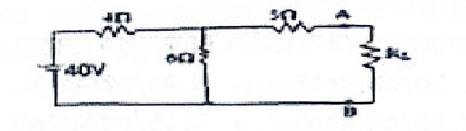
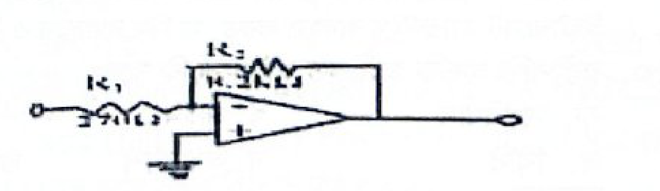
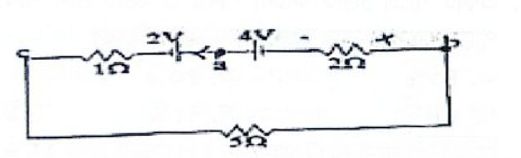

অধ্যায় ১৪
ম্যাট্রিক্স পিএসসি নন-ক্যাডার প্রশ্নব্যাংক (৩য় খণ্ড)
পৃষ্ঠা ১১৩–১২২
পরীক্ষার তারিখ: ০২ সেপ্টেম্বর ২০২৫
সরকারি কর্ম কমিশন (পিএসসি): ইলেক্ট্রিক ইন্সপেক্টর ২০২৫ (PSC Electric Inspector 2025)
বিদ্যুৎ, জ্বালানি ও খনিজ সম্পদ মন্ত্রণালয় — ইলেক্ট্রিক ইন্সপেক্টর নিয়োগ পরীক্ষা ২০২৫ (পূর্ণাঙ্গ ১০০টি প্রশ্ন ও সমাধান)
বিসিএস ও পিএসসি প্রশ্ন বিশ্লেষণ ছক
| বিষয় | প্রশ্নের বিষয়বস্তু | প্রশ্ন সংখ্যা | মান |
|---|---|---|---|
| বাংলা সাহিত্য ও ব্যাকরণ | প্রাচীন-মধ্য-আধুনিক যুগ, শাহ মুহম্মদ সগীর, রবীন্দ্রনাথ, নজরুল, আল মাহমুদ, সৈয়দ মুজতবা আলী, রোকেয়া, ব্যাকরণের চার স্তর, সন্ধি, সমাস, কারক | ২১টি | ২১ |
| English Language | Grammar, Voice, Preposition, Tag question, Indirect speech, Determiner, Part of speech, Idiom, Vocabulary | ২০টি | ২০ |
| বাংলাদেশ ও আন্তর্জাতিক বিষয়াবলি | হলোকাস্ট, গাজা যুদ্ধ, ব্রিকস ১০ম সদস্য, জি-৭, ঈশা খাঁ, সাবমেরিন ক্যাবল, অধ্যাদেশ, কয়লাক্ষেত্র, বিডা, আইসিসি, বিশ্বব্যাংক, হরমুজ প্রণালী | ১৯টি | ১৯ |
| টেকনিক্যাল প্রশ্ন (Electrical) | Thévenin Theorem, Inverting Op-Amp, Semiconductor (Fermi-level, MESFET, Zener), Solar MPPT, Transformer, Motor, Transmission, Circuit | ৪০টি | ৪০ |
| সর্বমোট | ১০০টি প্রশ্ন | ১০০ নম্বর | |
প্রথম অংশ: প্রামাণ্য ইন্টারেক্টিভ রিভিশন নোট ও সূত্রাবলি
Authentic Interactive Notes & Sketchnotes১. বাংলা সাহিত্য ও ব্যাকরণের কালজয়ী সূত্রাবলি
অধ্যায়ের প্রশ্ন ও ব্যাখ্যা থেকে প্রাপ্ত সারসংক্ষেপ:
📌 যুগবিভাগ ও প্রথম মুসলমান কবি:
• বাংলা সাহিত্যের তিনটি যুগ: প্রাচীন যুগ (৬৫০-১২০০ খ্রি:), মধ্যযুগ (১২০১-১৮০০ খ্রি:), এবং আধুনিক যুগ (১৮০১ খ্রি: থেকে বর্তমান)।
• বাংলা সাহিত্যের প্রথম মুসলমান কবি শাহ মুহম্মদ সগীর গৌড়ের সুলতান গিয়াসউদ্দিন আজম শাহের আমলে (১৩৯৩–১৪০৯) বিখ্যাত প্রণয়কাব্য 'ইউসুফ-জোলেখা' রচনা করেন।
• বাংলা সাহিত্যের তিনটি যুগ: প্রাচীন যুগ (৬৫০-১২০০ খ্রি:), মধ্যযুগ (১২০১-১৮০০ খ্রি:), এবং আধুনিক যুগ (১৮০১ খ্রি: থেকে বর্তমান)।
• বাংলা সাহিত্যের প্রথম মুসলমান কবি শাহ মুহম্মদ সগীর গৌড়ের সুলতান গিয়াসউদ্দিন আজম শাহের আমলে (১৩৯৩–১৪০৯) বিখ্যাত প্রণয়কাব্য 'ইউসুফ-জোলেখা' রচনা করেন।
| সাহিত্যিক | উপাধি / পরিচয় | অনবদ্য সৃষ্টি |
|---|---|---|
| রবীন্দ্রনাথ ঠাকুর | বিশ্বকবি (উপাধিদাতা: ব্রহ্মবান্ধব উপাধ্যায়), ছোটগল্পের রাজা/জনক | 'নৈবেদ্য' (বৈরাগ্য সাধনে মুক্তি সে আমার নয়), 'সঞ্চয়িতা' (কাব্য সংকলন), 'যোগাযোগ', 'কড়ি ও কোমল' |
| কাজী নজরুল ইসলাম | জাতীয় কবি, বিদ্রোহী কবি | 'বিদ্রোহী' কবিতা (রচনাকাল: ডিসেম্বর ১৯২১, তালতলা লেন; শতবর্ষ: ২০২২; 'অগ্নিবীণা' কাব্যের ২য় কবিতা), 'দোলন চাঁপা' (আজ সৃষ্টি সুখের উল্লাসে), 'সঞ্চিতা' |
| বেগম রোকেয়া | মুসলিম নারী জাগরণের অগ্রদূত | 'Sultana's Dream' (বাংলা রূপ: 'সুলতানার স্বপ্ন'), নারীস্থান (Lady Land) এর রূপকার |
| সৈয়দ মুজতবা আলী | শ্রেষ্ঠ রম্য ও ভ্রমণ সাহিত্যিক | 'দেশে বিদেশে' (আফগানিস্তানের অভিজ্ঞতা), 'চাচা কাহিনী' (১৯৫২), 'শবনম' |
| আল মাহমুদ | আধুনিক কালের রূপসী বাংলার কবি | 'সোনালী কাবিন' (১৯৭৩), 'প্রত্যাবর্তনের লজ্জা' |
🔍 ব্যাকরণের মৌলিক ৪টি আলোচ্য বিষয় ও তাদের ক্রম:
ক্রম: ধ্বনিতত্ত্ব (Phonology) → রূপতত্ত্ব বা শব্দতত্ত্ব (Morphology) → বাক্যতত্ত্ব (Syntax) → অর্থতত্ত্ব (Semantics)।
• ধ্বনিতত্ত্ব: ধ্বনি, বর্ণ, সন্ধি, ণ-ত্ব ও ষ-ত্ব বিধান।
• রূপতত্ত্ব/শব্দতত্ত্ব: শব্দ, প্রত্যয়, উপসর্গ, বচন, লিঙ্গ, সমাস, পুরুষ, অনুসর্গ।
• বাক্যতত্ত্ব: বাক্য রূপান্তর, বাচ্য, উক্তি, কারক বিশ্লেষণ, বাক্যের উপাদান লোপ, যতিচিহ্ন।
• অর্থতত্ত্ব: শব্দ ও বাক্যের অর্থ বিচার, প্রতিশব্দ, বিপরীত শব্দ, বাগধারা।
• প্রত্যয়ের অপপ্রয়োগ: 'কৃপণ' + 'তা' = 'কৃপণতা' (শুদ্ধ) অথবা 'কার্পণ্য' (শুদ্ধ); কিন্তু 'কার্পণ্যতা' প্রত্যয়ের বাহুল্যজনিত অশুদ্ধ রূপ।
ক্রম: ধ্বনিতত্ত্ব (Phonology) → রূপতত্ত্ব বা শব্দতত্ত্ব (Morphology) → বাক্যতত্ত্ব (Syntax) → অর্থতত্ত্ব (Semantics)।
• ধ্বনিতত্ত্ব: ধ্বনি, বর্ণ, সন্ধি, ণ-ত্ব ও ষ-ত্ব বিধান।
• রূপতত্ত্ব/শব্দতত্ত্ব: শব্দ, প্রত্যয়, উপসর্গ, বচন, লিঙ্গ, সমাস, পুরুষ, অনুসর্গ।
• বাক্যতত্ত্ব: বাক্য রূপান্তর, বাচ্য, উক্তি, কারক বিশ্লেষণ, বাক্যের উপাদান লোপ, যতিচিহ্ন।
• অর্থতত্ত্ব: শব্দ ও বাক্যের অর্থ বিচার, প্রতিশব্দ, বিপরীত শব্দ, বাগধারা।
• প্রত্যয়ের অপপ্রয়োগ: 'কৃপণ' + 'তা' = 'কৃপণতা' (শুদ্ধ) অথবা 'কার্পণ্য' (শুদ্ধ); কিন্তু 'কার্পণ্যতা' প্রত্যয়ের বাহুল্যজনিত অশুদ্ধ রূপ।
২. English Grammar & Usage Essentials
Rule 1: Prefer + Gerund/Noun + TO + Gerund/Noun
Example: She prefers dancing TO singing. (Never 'than' or 'more than')
Example: She prefers dancing TO singing. (Never 'than' or 'more than')
Rule 2: Passive of Who (Past Simple)
Active: Who + Verb(past) + Object?
Passive: By whom + was/were + Object + V3 (Past Participle)?
Example: Who opened the door? → By whom was the door opened?
Active: Who + Verb(past) + Object?
Passive: By whom + was/were + Object + V3 (Past Participle)?
Example: Who opened the door? → By whom was the door opened?
📌 Important Grammar Rules:
• Uncountable Nouns: Scenery, furniture, information, advice, luggage — এদের কোনো plural form হয় না।
• Second Conditional: If + Past Simple, Subject + would/could/might + V1 (base form). e.g., 'If we had a boat, we would cross the river.'
• After Clause Tense: Past Simple + AFTER + Past Perfect. e.g., 'He bought a car after he had saved enough money.'
• Gerund after Verbs: Enjoy, admit, avoid, consider, finish + V-ing (e.g., enjoy watching cricket).
• Prepositional Idioms: Tired of walking (ক্লান্ত হওয়া); Ins and outs (খুঁটিনাটি / all details).
• Uncountable Nouns: Scenery, furniture, information, advice, luggage — এদের কোনো plural form হয় না।
• Second Conditional: If + Past Simple, Subject + would/could/might + V1 (base form). e.g., 'If we had a boat, we would cross the river.'
• After Clause Tense: Past Simple + AFTER + Past Perfect. e.g., 'He bought a car after he had saved enough money.'
• Gerund after Verbs: Enjoy, admit, avoid, consider, finish + V-ing (e.g., enjoy watching cricket).
• Prepositional Idioms: Tired of walking (ক্লান্ত হওয়া); Ins and outs (খুঁটিনাটি / all details).
৩. বাংলাদেশ ও আন্তর্জাতিক সাম্প্রতিক তথ্যপ্রবাহ
| বিষয় | গুরুত্বপূর্ণ প্রামাণ্য তথ্য |
|---|---|
| হলোকাস্ট (Holocaust) | দ্বিতীয় বিশ্বযুদ্ধে নাৎসি জার্মানি কর্তৃক ইউরোপের প্রায় ৬০ লাখ ইহুদির পরিকল্পিত গণহত্যা। |
| ব্রিকস (BRICS) ১০ম সদস্য | ১ জানুয়ারি ২০২৫ তারিখে ইন্দোনেশিয়া ব্রিকসের পূর্ণাঙ্গ ১০ম সদস্য হিসেবে যোগ দেয়। |
| জি-৭ (G-7) জোট | বিশ্বের ৭ শিল্পোন্নত দেশ: যুক্তরাষ্ট্র, যুক্তরাজ্য, কানাডা, ফ্রান্স, জার্মানি, ইতালি, জাপান। |
| সাবমেরিন ক্যাবল (SEA-ME-WE 4) | বাংলাদেশ ২১ মে ২০০৬ সালে যুক্ত হয়; প্রথম ল্যান্ডিং স্টেশন কক্সবাজারের ঝিলংজায়। |
| রাষ্ট্রপতির অধ্যাদেশ (Ordinance) | সংবিধানের ৯৩ অনুচ্ছেদ অনুযায়ী সংসদ অধিবেশন না থাকলে রাষ্ট্রপতি বিশেষ আইন জারি করেন। |
| জামালগঞ্জ কয়লাক্ষেত্র | জয়পুরহাটের জামালগঞ্জ দেশের গভীরতম (৬০০-১১০০ মি.) ও বৃহত্তম কয়লাখনি (১,০৫০ মিলিয়ন টন মজুদ)। |
| আন্তর্জাতিক অপরাধ আদালত (ICC) | সদর দপ্তর: হেগ, নেদারল্যান্ডস। ১৯৯৮ সালের রোম সংবিধির অধীনে প্রতিষ্ঠিত; বর্তমান সদস্য ১২৫টি দেশ। |
| জুলাই গণঅভ্যুত্থান ২০২৪ | ৭ জুলাই ২০২৪ তারিখে সারা দেশে বৈষম্যবিরোধী ছাত্র আন্দোলনের 'বাংলা ব্লকেড' শুরু হয়। |
| ম্যাগসেসে স্বাধীনতা পুরস্কার | বুয়েটের শহীদ ছাত্র আবরার ফাহাদ ২০২৪ সালে ফিলিপাইনের 'প্রতিবাদী তারুণ্য' পুরস্কার পান। |
৪. টেকনিক্যাল ইলেক্ট্রিক্যাল ইঞ্জিনিয়ারিং ফর্মুলা ও মেগা কনসেপ্টস
[Thévenin Open-Circuit Voltage]
In a circuit with 40V source, 4Ω & 6Ω series resistors and 5Ω lead resistor:
V_th = V_AB = V_6Ω = 40V × [6Ω / (4Ω + 6Ω)] = 40 × 0.6 = 24V
In a circuit with 40V source, 4Ω & 6Ω series resistors and 5Ω lead resistor:
V_th = V_AB = V_6Ω = 40V × [6Ω / (4Ω + 6Ω)] = 40 × 0.6 = 24V
[Inverting Op-Amp Voltage Gain]
|A_v| = Feedback Resistor / Input Resistor = R_f / R_in = R_2 / R_1 = 25.6
|A_v| = Feedback Resistor / Input Resistor = R_f / R_in = R_2 / R_1 = 25.6
[Capacitive Reactance vs Frequency]
X_C = 1 / (2π f C) ⟹ X_C ∝ 1/f
At 50Hz, X_C1 = 5Ω ⟹ At 100Hz (doubled frequency), X_C2 = 5Ω / 2 = 2.5Ω
X_C = 1 / (2π f C) ⟹ X_C ∝ 1/f
At 50Hz, X_C1 = 5Ω ⟹ At 100Hz (doubled frequency), X_C2 = 5Ω / 2 = 2.5Ω
[Energy Stored in an Inductor]
Steady-state current I = V / R = 100V / 20Ω = 5A
Energy E = 1/2 × L × I² = 1/2 × 5H × (5A)² = 1/2 × 5 × 25 = 62.5 Joules
Steady-state current I = V / R = 100V / 20Ω = 5A
Energy E = 1/2 × L × I² = 1/2 × 5H × (5A)² = 1/2 × 5 × 25 = 62.5 Joules
⚡ পাওয়ার সিস্টেম ও সেমিকন্ডাক্টর বুস্টার রুলস:
• ট্রান্সমিশন লাইন সুরক্ষা: দীর্ঘ লাইনের জন্য সর্বাধিক ব্যবহৃত রিলে হলো Distance Relay (Impedance Relay)।
• ট্রান্সফরমার কোর: এডি কারেন্ট লস (Eddy Current Loss) হ্রাসে সিলিকন স্টিলের Laminated Core ব্যবহৃত হয়।
• দ্রুততম সেমিকন্ডাক্টর সুইচ: উচ্চ ইলেকট্রন মবিলিটির GaAs নির্মিত MESFET (MSFET) গিগাহার্টজ রেঞ্জে দ্রুততম।
• জেনার ডায়োড: Heavily doped p-n জাংশন হওয়ায় এর ডিপ্লেশন লেয়ার অত্যন্ত পাতলা বা সংকীর্ণ (narrow depletion layer) হয়।
• ফার্মি লেভেল (T=0K): n-টাইপ সেমিকন্ডাক্টরে ফার্মি লেভেল কন্ডাকশন ব্যান্ডের তলদেশ (\(E_c\)) এবং ডোনার লেভেলের (\(E_d\)) ঠিক মাঝামাঝি থাকে।
• কাপ্তাই পানিবিদ্যুৎ কেন্দ্র: বাংলাদেশের একমাত্র জলবিদ্যুৎ কেন্দ্রের স্থাপিত উৎপাদন ক্ষমতা ২৩০ মেগাওয়াট (230 MW)।
• সৌর নেট-মিটারিং: উদ্বৃত্ত বিদ্যুৎ জাতীয় গ্রিডে রপ্তানি (Exporting excess electricity to the grid) করার অনুমতি দেয়।
• ইলেকট্রিক ভেহিকল (EV) মোটর: ছোট বৈদ্যুতিক যানবাহনে সর্বাধিক ব্যবহৃত মোটর হলো Brushless DC Motor (BLDC)।
• ট্রান্সমিশন লাইন সুরক্ষা: দীর্ঘ লাইনের জন্য সর্বাধিক ব্যবহৃত রিলে হলো Distance Relay (Impedance Relay)।
• ট্রান্সফরমার কোর: এডি কারেন্ট লস (Eddy Current Loss) হ্রাসে সিলিকন স্টিলের Laminated Core ব্যবহৃত হয়।
• দ্রুততম সেমিকন্ডাক্টর সুইচ: উচ্চ ইলেকট্রন মবিলিটির GaAs নির্মিত MESFET (MSFET) গিগাহার্টজ রেঞ্জে দ্রুততম।
• জেনার ডায়োড: Heavily doped p-n জাংশন হওয়ায় এর ডিপ্লেশন লেয়ার অত্যন্ত পাতলা বা সংকীর্ণ (narrow depletion layer) হয়।
• ফার্মি লেভেল (T=0K): n-টাইপ সেমিকন্ডাক্টরে ফার্মি লেভেল কন্ডাকশন ব্যান্ডের তলদেশ (\(E_c\)) এবং ডোনার লেভেলের (\(E_d\)) ঠিক মাঝামাঝি থাকে।
• কাপ্তাই পানিবিদ্যুৎ কেন্দ্র: বাংলাদেশের একমাত্র জলবিদ্যুৎ কেন্দ্রের স্থাপিত উৎপাদন ক্ষমতা ২৩০ মেগাওয়াট (230 MW)।
• সৌর নেট-মিটারিং: উদ্বৃত্ত বিদ্যুৎ জাতীয় গ্রিডে রপ্তানি (Exporting excess electricity to the grid) করার অনুমতি দেয়।
• ইলেকট্রিক ভেহিকল (EV) মোটর: ছোট বৈদ্যুতিক যানবাহনে সর্বাধিক ব্যবহৃত মোটর হলো Brushless DC Motor (BLDC)।
দ্বিতীয় অংশ: বিগত বছরের প্রামাণ্য প্রশ্নব্যাংক ও ইন্টারঅ্যাক্টিভ কুইজ
Past Exam Question Engine
প্রশ্ন ১
বাংলা
১. বাংলা সাহিত্যের ইতিহাসে প্রাচীনতম মুসলমান কবি কে?
প্রশ্ন ২
English
২. Which one is a correct sentence?
প্রশ্ন ৩
টেকনিক্যাল প্রশ্ন
৩. The open circuit voltage between terminals 'A' and 'B' is-

প্রশ্ন ৪
বাংলা
৪. 'বৈরাগ্য সাধনে ........ সে আমার নয়।' শূন্যস্থান পূরণ করুন-
প্রশ্ন ৫
English
৫. Identify the correctly spelt word:
প্রশ্ন ৬
টেকনিক্যাল প্রশ্ন
৬. Which transistor acts as the fastest which?
প্রশ্ন ৭
টেকনিক্যাল প্রশ্ন
৭. The voltage gain of the inverting op-amp is:

প্রশ্ন ৮
টেকনিক্যাল প্রশ্ন
৮. Which of the following motor types is most suitable for variable speed drives?
প্রশ্ন ৯
টেকনিক্যাল প্রশ্ন
৯. What is a major benefit of implementing smart grid technology in Bangladesh?
প্রশ্ন ১০
টেকনিক্যাল প্রশ্ন
১০. At T=0K, the Fermi-level in an n-type semiconductor lies:
প্রশ্ন ১১
টেকনিক্যাল প্রশ্ন
১১. For 11100101 (in 2's complement form), the corresponding decimal number is:
প্রশ্ন ১২
বাংলা
১২. বাংলা ছোটগল্পের রাজা বলা হয় কাকে?
প্রশ্ন ১৩
টেকনিক্যাল প্রশ্ন
১৩. What is the maximum possible range of bitcount specifically in n-bit binary counter consisting of 'a' number of flip-flops?
প্রশ্ন ১৪
টেকনিক্যাল প্রশ্ন
১৪. The maximum power point tracking (MPPT) in a solar system is used to:
প্রশ্ন ১৫
বাংলা
১৫. 'সোনালী কাবিন' গ্রন্থের লেখক কে ছিলেন?
প্রশ্ন ১৬
বাংলা
১৬. কবি কাজী নজরুল ইসলামের লেখা 'বিদ্রোহী' কবিতার শতবর্ষ পালিত হয়েছে কত সালে?
প্রশ্ন ১৭
বাংলা
১৭. বাংলা সাহিত্যের আধুনিক যুগের সূচনা কবে?
প্রশ্ন ১৮
টেকনিক্যাল প্রশ্ন
১৮. For a thyristor, the forward breakover voltage is maximum when:
প্রশ্ন ১৯
টেকনিক্যাল প্রশ্ন
১৯. For a coil, L = 5H and R = 20Ω connected to a DC supply of 100V, the energy stored in the magnetic field is:
প্রশ্ন ২০
সাধারণ জ্ঞান
২০. হলোকাস্ট বলে চিহ্নিত করা যায় কোনটিকে?
প্রশ্ন ২১
টেকনিক্যাল প্রশ্ন
২১. Which part of the transformer is used to reduce eddy current loss?
প্রশ্ন ২২
English
২২. Identify the correct passive form: 'Who opened the door?'
প্রশ্ন ২৩
সাধারণ জ্ঞান
২৩. চীনের প্রস্তাবিত এক হাজার শয্যার হাসপাতালের জন্য নির্বাচিত জেলা কোনটি?
প্রশ্ন ২৪
টেকনিক্যাল প্রশ্ন
২৪. Which of the following challenges is most critical for smart grid deployment in rural Bangladesh?
প্রশ্ন ২৫
English
২৫. Identify the noun that has no plural form?
প্রশ্ন ২৬
টেকনিক্যাল প্রশ্ন
২৬. A net-metering system in a solar PV allows:
প্রশ্ন ২৭
টেকনিক্যাল প্রশ্ন
২৭. Zener diodes have:
প্রশ্ন ২৮
বাংলা
২৮. শুদ্ধ বানান কোনটি?
প্রশ্ন ২৯
বাংলা
২৯. কোনটি ভাষার মৌলিক উপাদান নয়?
প্রশ্ন ৩০
টেকনিক্যাল প্রশ্ন
৩০. Which relay is commonly used for the protection of the transmission lines?
প্রশ্ন ৩১
সাধারণ জ্ঞান
৩১. ব্রিকসের ১০ম সদস্য হিসেবে যোগ দিয়েছে কোন দেশ?
প্রশ্ন ৩২
টেকনিক্যাল প্রশ্ন
৩২. TV programs are telecast using a combination of modulation techniques. Which of the combination is used?
প্রশ্ন ৩৩
সাধারণ জ্ঞান
৩৩. গাজা-ইসরাঈল যুদ্ধ কত তারিখে শুরু হয়?
প্রশ্ন ৩৪
টেকনিক্যাল প্রশ্ন
৩৪. The reactance of a capacitor at 50Hz is 5Ω. If the frequency is increased to 100 Hz, the new reactance is:
প্রশ্ন ৩৫
সাধারণ জ্ঞান
৩৫. G-7 (জি-৭) -এর সদস্য দেশ হলো-
প্রশ্ন ৩৬
টেকনিক্যাল প্রশ্ন
৩৬. The Kaptai Dam, the only hydroelectric power station in Bangladesh, has an installed capacity of:
প্রশ্ন ৩৭
টেকনিক্যাল প্রশ্ন
৩৭. The speed of an induction motor can be controlled by:
প্রশ্ন ৩৮
বাংলা
৩৮. কবি কাজী নজরুল ইসলামের কবিতা কোনটি?
প্রশ্ন ৩৯
টেকনিক্যাল প্রশ্ন
৩৯. What is the typical battery voltage used in electric rickshaws in Bangladesh?
প্রশ্ন ৪০
টেকনিক্যাল প্রশ্ন
৪০. The main function of a freewheeling diode in a power converter is to:
প্রশ্ন ৪১
বাংলা
৪১. 'কারক' ব্যাকরণের কোন অংশে আলোচিত হয়?
প্রশ্ন ৪২
সাধারণ জ্ঞান
৪২. ঈশা খাঁ-এর রাজধানী কোথায় ছিল?
প্রশ্ন ৪৩
সাধারণ জ্ঞান
৪৩. বাংলাদেশ কবে সাবমেরিন ক্যাবলে যুক্ত হয়েছে?
প্রশ্ন ৪৪
টেকনিক্যাল প্রশ্ন
৪৪. Which memory acts as a buffer between CPU and main memory?
প্রশ্ন ৪৫
বাংলা
৪৫. 'আবশ্যকীয় ব্যয়ে কার্পণ্যতা অনুচিত' -এ বাক্যে কোন কারণে অপপ্রয়োগ ঘটেছে?
প্রশ্ন ৪৬
টেকনিক্যাল প্রশ্ন
৪৬. A transistor in saturation region acts like a:
প্রশ্ন ৪৭
English
৪৭. Find the noun form of the word 'successful':
প্রশ্ন ৪৮
টেকনিক্যাল প্রশ্ন
৪৮. Which of the following devices is used to protect power system from lighting surges?
প্রশ্ন ৪৯
টেকনিক্যাল প্রশ্ন
৪৯. In power system, the main purpose of load flow studies is to determine:
প্রশ্ন ৫০
সাধারণ জ্ঞান
৫০. রাষ্ট্রপতি কর্তৃক জারিকৃত আইনকে কি বলে?
প্রশ্ন ৫১
English
৫১. Select the correct indirect form: He said to me, "Let us go home"
প্রশ্ন ৫২
বাংলা
৫২. 'দেশে বিদেশে' - কোন ধরণের রচনা?
প্রশ্ন ৫৩
টেকনিক্যাল প্রশ্ন
৫৩. Which organization is responsible for promoting energy efficiency in Bangladesh?
প্রশ্ন ৫৪
English
৫৪. The lawyer filed a review petition. Here 'review' is a/an-
প্রশ্ন ৫৫
টেকনিক্যাল প্রশ্ন
৫৫. The efficiency of a typical crystalline silicon solar PV panel is:
প্রশ্ন ৫৬
English
৫৬. Which one is masculine gender?
প্রশ্ন ৫৭
English
৫৭. Identify the right tag question: She will go home soon, ______?
প্রশ্ন ৫৮
সাধারণ জ্ঞান
৫৮. বাংলাদেশের গভীরতম কয়লা ক্ষেত্র কোনটি?
প্রশ্ন ৫৯
English
৫৯. Choose the sentence in which 'right' is a noun:
প্রশ্ন ৬০
টেকনিক্যাল প্রশ্ন
৬০. A thyristor (SCR) is a:
প্রশ্ন ৬১
English
৬১. Fill in the blank with the appropriate determiner: 'She is working on _____ UNESCO heritage site.'
প্রশ্ন ৬২
টেকনিক্যাল প্রশ্ন
৬২. What are the features of instrumentation amplifier?
প্রশ্ন ৬৩
English
৬৩. Pick out the right option: 'If we had a boat, we ______ the river.'
প্রশ্ন ৬৪
English
৬৪. Choose the right option: 'He bought a car after he ______ enough money.'
প্রশ্ন ৬৫
English
৬৫. Identify the verb form of the word 'survival'-
প্রশ্ন ৬৬
বাংলা
৬৬. 'সঞ্চয়িতা' কোন কবির কাব্য সংকলন?
প্রশ্ন ৬৭
সাধারণ জ্ঞান
৬৭. বাংলাদেশ বিনিয়োগ উন্নয়ন কর্তৃপক্ষ (বিডা) -এর প্রাথমিক উদ্দেশ্য কী?
প্রশ্ন ৬৮
বাংলা
৬৮. বেগম রোকেয়া সাখাওয়াত হোসেনের লেখা গ্রন্থ কোনটি?
প্রশ্ন ৬৯
বাংলা
৬৯. 'অভিমানী' শব্দের বিপরীত শব্দ কোনটি?
প্রশ্ন ৭০
টেকনিক্যাল প্রশ্ন
৭০. Which modulation technique is commonly used in voltage source inverters?
প্রশ্ন ৭১
বাংলা
৭১. 'I had to go there' এর বাংলা অনুবাদ কী?
প্রশ্ন ৭২
English
৭২. Choose the right option: I really enjoy ______ cricket matches on TV.
প্রশ্ন ৭৩
টেকনিক্যাল প্রশ্ন
৭৩. In a transistor, the operating point is most stable when using:
প্রশ্ন ৭৪
সাধারণ জ্ঞান
৭৪. আন্তর্জাতিক অপরাধ আদালতের বর্তমান সদস্য সংখ্যা কত?
প্রশ্ন ৭৫
সাধারণ জ্ঞান
৭৫. কত তারিখে বাংলা ব্লকেড কর্মসূচি পালন করা হয়?
প্রশ্ন ৭৬
বাংলা
৭৬. দেখার ইচ্ছাকে এককথায় কী বলে?
প্রশ্ন ৭৭
English
৭৭. Select the correct option: 'These are the policeman ______ caught the thief.'
প্রশ্ন ৭৮
টেকনিক্যাল প্রশ্ন
৭৮. What is the main barrier to large-scale solar-park development in Bangladesh?
প্রশ্ন ৭৯
সাধারণ জ্ঞান
৭৯. বিশ্বব্যাংকের সদর দপ্তর কোথায়?
প্রশ্ন ৮০
টেকনিক্যাল প্রশ্ন
৮০. The main function of a bus bar in a sub-station is to:
প্রশ্ন ৮১
বাংলা
৮১. 'পিত্ৰালয়' শব্দের সন্ধি বিচ্ছেদ কোনটি?
প্রশ্ন ৮২
টেকনিক্যাল প্রশ্ন
৮২. A three-phase fault is considered the most severe because:
প্রশ্ন ৮৩
টেকনিক্যাল প্রশ্ন
৮৩. The hexadecimal representation of 101011111 is:
প্রশ্ন ৮৪
English
৮৪. A person who has come to settle permanently in a country that is not his/her own is a/an-
প্রশ্ন ৮৫
English
৮৫. Select the right antonym of 'mobile':
প্রশ্ন ৮৬
সাধারণ জ্ঞান
৮৬. 'প্রতিবাদী তারুণ্য' ক্যাটাগরিতে ম্যাগসেসে স্বাধীনতা পুরস্কার পেয়েছেন কে?
প্রশ্ন ৮৭
টেকনিক্যাল প্রশ্ন
৮৭. Which component is used to control voltage in long transmission lines?
প্রশ্ন ৮৮
সাধারণ জ্ঞান
৮৮. নভোথিয়েটারের স্থপতি কে?
প্রশ্ন ৮৯
টেকনিক্যাল প্রশ্ন
৮৯. The torque of squirrel cage induction motor is:
প্রশ্ন ৯০
বাংলা
৯০. মিলনার্থক দ্বন্দ্ব সমাস কোনটি?
প্রশ্ন ৯১
সাধারণ জ্ঞান
৯১. কোন দুটি দেশকে হরমুজ প্রণালী ভৌগোলিকভাবে পৃথক করেছে?
প্রশ্ন ৯২
সাধারণ জ্ঞান
৯২. কোন দেশ আমেরিকাকে স্ট্যাচু অব লিবার্টি উপহার দিয়েছে?
প্রশ্ন ৯৩
English
৯৩. The idiom 'the ins and outs' means-
প্রশ্ন ৯৪
সাধারণ জ্ঞান
৯৪. কোন তারিখে ইরান-ইসরাইল যুদ্ধ বিরতি হয়?
প্রশ্ন ৯৫
টেকনিক্যাল প্রশ্ন
৯৫. The potential difference between 'b' and 'a' is:

প্রশ্ন ৯৬
English
৯৬. Fill in the blank with the appropriate preposition: Ushashi was tired ______ walking.
প্রশ্ন ৯৭
বাংলা
৯৭. ব্যাকরণের মৌলিক উপাদানের ক্রম হলো-
প্রশ্ন ৯৮
বাংলা
৯৮. কোনটি তদ্ভব শব্দ?
প্রশ্ন ৯৯
সাধারণ জ্ঞান
৯৯. জলবায়ু পরিবর্তন বলতে বুঝায়-
প্রশ্ন ১০০
টেকনিক্যাল প্রশ্ন
১০০. Which motor is commonly used in small electric vehicles?